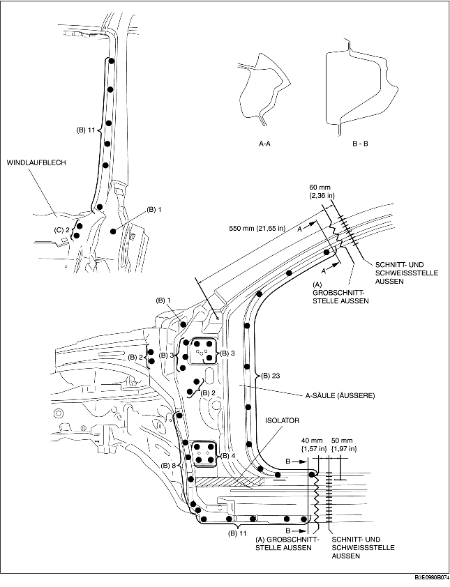
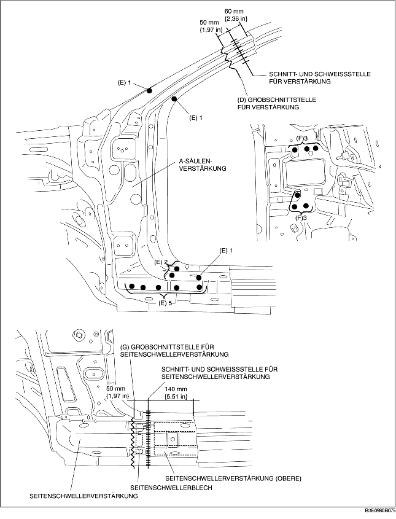
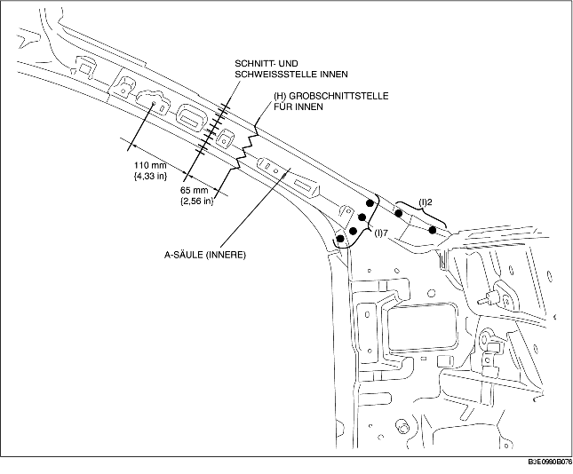

1. Den Bereich (A) grob vorschneiden und die 69 mit (B) gekennzeichneten Stellen aufbohren.
2. Der Ausbau der A-Säule (äußere) kann durch Überschneidung mit dem Windlaufblech erschwert werden. Deshalb die 2 mit (C) gekennzeichneten Stellen aufbohren und das Windlaufblech nach außen drücken.
3. Die A-Säule (äußere) ausbauen.

4. Den Bereich (D) grob vorschneiden und die 10 mit (E) gekennzeichneten Stellen aufbohren.
5. Die 6 mit (F) gekennzeichneten Schweißstellen von der Innenseite aufbohren.
6. Die A-Säulenverstärkung ausbauen.
7. Bereich (G) grob vorschneiden und die Seitenschwellerverstärkung entfernen.

8. Bereich (H) grob vorschneiden, die 9 mit (I) gekennzeichneten Schweißstellen aufbohren und dann die A-Säule (innere) entfernen.
